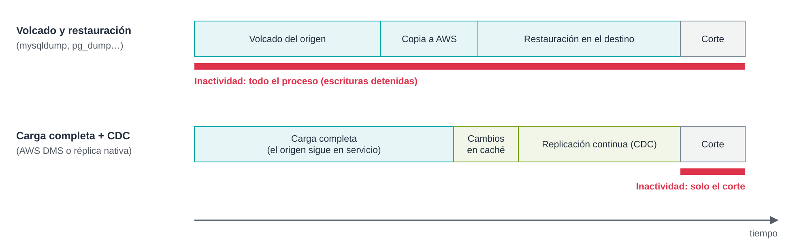

UD5 · 6.1. Migración de bases de datos: técnicas y planificación¶
1. Introducción¶
Migrar una base de datos es más delicado que migrar ficheros. Una base de datos cambia constantemente mientras se migra, tiene objetos además de datos (índices, vistas, procedimientos, usuarios) y suele dar servicio a aplicaciones que no pueden quedarse paradas mucho tiempo.
Este documento presenta las técnicas para trasladar una base de datos a AWS y cómo planificar el proceso para que termine con los datos íntegros y el menor tiempo de inactividad posible. El documento 6.2 estudia en detalle AWS Database Migration Service (DMS).
Objetivos¶
- Distinguir entre migraciones homogéneas y heterogéneas.
- Conocer las técnicas de migración y el tiempo de inactividad que implica cada una.
- Planificar una migración: evaluación, pruebas, corte y vuelta atrás.
- Validar que los datos migrados coinciden con el origen.
2. Migración homogénea y heterogénea¶
| Tipo | Definición | Ejemplo | Dificultad principal |
|---|---|---|---|
| Homogénea | El motor de origen y el de destino son el mismo. | MySQL local → Amazon RDS for MySQL | Mover los datos con poca interrupción. |
| Heterogénea | El motor cambia. | Oracle → Amazon Aurora PostgreSQL | Además, convertir el esquema y el código (procedimientos, disparadores, tipos de datos). |
En una migración homogénea, el esquema se traslada tal cual. En una heterogénea, hay dos trabajos separados: convertir el esquema y mover los datos. Conviene que la versión del motor de destino sea igual o superior a la de origen: no se puede migrar a una versión anterior.
Desde el punto de vista de las estrategias de migración (documento 1), pasar de un servidor propio a Amazon RDS con el mismo motor es Replatform. Cambiar de motor forma parte habitualmente de un Refactor.
3. Técnicas de migración¶
3.1. Volcado lógico y restauración¶
Se exporta la base de datos a un fichero de sentencias SQL con las herramientas del propio motor y se ejecuta ese fichero en el destino.
| Motor | Exportación | Importación |
|---|---|---|
| MySQL / MariaDB | mysqldump |
mysql |
| PostgreSQL | pg_dump |
pg_restore o psql |
| SQL Server | Asistente de exportación o bcp |
sqlcmd o bcp |
# Volcado coherente de una base de datos InnoDB, con procedimientos, disparadores y eventos
mysqldump -h origen.empresa.local -u admin -p \
--single-transaction --routines --triggers --events \
--set-gtid-purged=OFF --databases tienda > tienda.sql
# Restauración en Amazon RDS for MySQL
mysql -h tienda-db.xxxxxxxx.us-east-1.rds.amazonaws.com -u admin -p < tienda.sql
- Ventajas: sencilla, sin herramientas adicionales, migra datos y objetos.
- Inconvenientes: las escrituras deben detenerse desde que empieza el volcado hasta que la aplicación apunta al destino; todo ese tiempo es inactividad. Con bases de datos grandes puede durar horas.
- Cuándo usarla: bases de datos pequeñas o medianas, o cuando se dispone de una ventana de mantenimiento amplia.
Nota. En Amazon RDS no existe un usuario con privilegio
SUPER. Si el volcado incluye cláusulasDEFINERde otro usuario o sentencias de GTID, la restauración puede fallar. Por eso se usa--set-gtid-purged=OFFy se revisan losDEFINER.
3.2. Copia física¶
Se copian los ficheros de datos del motor, no sentencias SQL. Es mucho más rápida en volúmenes grandes.
- MySQL: se hace una copia con Percona XtraBackup, se sube a S3 y se crea una instancia de RDS restaurándola desde S3.
- SQL Server: copia de seguridad nativa (
.bak) en S3 y restauración en RDS for SQL Server. - Oracle: Oracle Data Pump con los ficheros en S3.
Tiene el mismo inconveniente que el volcado: si la base de datos sigue recibiendo escrituras, esos cambios no llegan al destino. Por eso suele combinarse con la técnica siguiente.
3.3. Replicación nativa¶
Se configura el destino como réplica del origen usando el mecanismo de replicación del propio motor. Tras una carga inicial (por volcado o copia física), los cambios se aplican de forma continua hasta el corte.
- MySQL: replicación basada en el registro binario (binlog). En RDS for MySQL, el destino se configura como réplica de un servidor externo con los procedimientos almacenados
mysql.rds_set_external_source(en versiones anteriores,mysql.rds_set_external_master) ymysql.rds_start_replication. - PostgreSQL: replicación lógica con publicaciones (
CREATE PUBLICATION) en el origen y suscripciones (CREATE SUBSCRIPTION) en el destino.
-- En el destino (RDS for MySQL), tras la carga inicial con mysqldump --source-data=2
CALL mysql.rds_set_external_source('origen.empresa.local', 3306,
'repl_user', 'contraseña', 'mysql-bin.000042', 154, 1); -- último parámetro: SSL
CALL mysql.rds_start_replication;
SHOW REPLICA STATUS\G -- comprobar Seconds_Behind_Source
- Ventajas: inactividad mínima; usa mecanismos conocidos del motor.
- Inconvenientes: solo sirve para migraciones homogéneas; exige red entre origen y destino y conocer bien el motor.
3.4. AWS Database Migration Service¶
AWS DMS es un servicio gestionado que hace la carga completa de los datos y, opcionalmente, la captura de datos de cambios (CDC, Change Data Capture), leyendo los registros de transacciones del origen. Sirve tanto para migraciones homogéneas como heterogéneas y no requiere instalar nada en el origen. Se estudia en el documento 6.2.
3.5. Comparativa¶
La figura compara el tiempo de inactividad de las dos familias de técnicas.

Figura 1. Con volcado y restauración, la aplicación no puede escribir durante todo el proceso. Con carga completa más CDC, solo durante el corte.
| Técnica | Homogénea | Heterogénea | Inactividad | Complejidad |
|---|---|---|---|---|
| Volcado lógico y restauración | Sí | No (salvo exportando datos planos) | Todo el proceso | Baja |
| Copia física | Sí | No | Todo el proceso | Media |
| Carga inicial + replicación nativa | Sí | No | Solo el corte | Media-alta |
| AWS DMS (carga completa + CDC) | Sí | Sí | Solo el corte | Media |
4. Planificación de la migración¶
4.1. Evaluación del origen¶
Antes de elegir técnica hay que inventariar la base de datos:
- Motor, versión y edición. Determinan el destino posible y las técnicas compatibles.
- Tamaño de los datos y de las tablas más grandes, y ritmo de cambios (transacciones por segundo, volumen de binlog diario).
- Objetos: tablas sin clave primaria, columnas de tipo LOB (
BLOB,TEXT), procedimientos, disparadores, eventos, vistas. - Juego de caracteres y collation, para evitar problemas con tildes y eñes.
- Usuarios y permisos que habrá que recrear en el destino.
- Dependencias: aplicaciones, informes o procesos por lotes que se conectan a la base de datos.
Cuando hay muchas bases de datos que evaluar, AWS recomienda AWS Migration Evaluator para el inventario y la estimación de costes. La herramienta anterior, DMS Fleet Advisor, dejó de tener soporte el 20 de mayo de 2026.
4.2. Diseño del destino¶
- Servicio: Amazon RDS (mismo motor, gestionado) o Amazon Aurora (compatible con MySQL o PostgreSQL, mayor escalabilidad).
- Dimensionamiento: clase de instancia, almacenamiento e IOPS a partir del uso actual.
- Disponibilidad: Multi-AZ para producción.
- Red y seguridad: subredes privadas, grupos de seguridad que solo permitan el tráfico necesario y conectividad con el origen (VPN o AWS Direct Connect).
- Parámetros: grupo de parámetros con la misma configuración relevante que el origen (
sql_mode, zona horaria, juego de caracteres).
4.3. Pruebas¶
Siempre se hace al menos una migración de prueba completa antes de la definitiva. Sirve para medir tiempos reales, detectar incompatibilidades y probar la aplicación contra el destino.
4.4. Plan de corte¶
El corte (cutover) es el momento en que la aplicación deja de usar el origen y pasa al destino. Con carga completa más CDC, los pasos habituales son:
- Comprobar que la latencia de replicación es cercana a cero.
- Detener las escrituras en el origen: parar la aplicación o poner la base de datos en solo lectura.
- Esperar a que se apliquen los últimos cambios (latencia cero).
- Validar los datos (apartado 5).
- Cambiar la cadena de conexión de la aplicación o el registro DNS hacia el destino.
- Abrir las escrituras en el destino y supervisar errores y rendimiento.
4.5. Plan de vuelta atrás¶
Hay que decidir de antemano qué se hará si el destino falla después del corte:
- Mantener el origen intacto y en solo lectura durante un periodo acordado.
- Fijar criterios objetivos para volver atrás (por ejemplo, errores de la aplicación o un rendimiento inaceptable).
- Si se necesita volver sin perder los cambios hechos en el destino, configurar una replicación inversa del destino al origen.
5. Validación de los datos¶
Que la migración termine sin errores no garantiza que los datos sean correctos. La validación combina varias comprobaciones:
| Comprobación | Cómo | Detecta |
|---|---|---|
| Recuento de filas | SELECT COUNT(*) por tabla en origen y destino |
Filas que faltan o sobran. |
| Sumas de comprobación | CHECKSUM TABLE (MySQL) o sumas sobre columnas numéricas |
Diferencias de contenido. |
| Muestreo | Comparar registros concretos, incluidos los más recientes | Problemas de codificación o de tipos de datos. |
| Objetos | Comparar el número de índices, vistas, procedimientos y disparadores | Objetos no migrados. |
| Pruebas funcionales | Ejecutar los casos de uso principales de la aplicación | Errores que los datos no muestran. |
AWS DMS incluye además una validación automática fila a fila, que se estudia en el documento 6.2.
6. Seguridad durante la migración¶
- Conexiones cifradas con TLS entre origen, herramienta de migración y destino.
- Usuario de migración con los privilegios mínimos (lectura y replicación en el origen), que se elimina al terminar.
- Credenciales guardadas en AWS Secrets Manager, no en scripts ni en ficheros de configuración.
- Destino cifrado en reposo con AWS KMS desde su creación, porque en RDS no se puede activar el cifrado sobre una instancia existente.
- Ficheros intermedios (volcados, copias de seguridad) cifrados y eliminados al acabar.
7. Ideas clave¶
- En una migración homogénea solo se mueven los datos; en una heterogénea, además, hay que convertir el esquema y el código.
- El volcado y la copia física obligan a detener las escrituras durante todo el proceso; la replicación nativa y DMS con CDC reducen la inactividad al momento del corte.
- Una migración se planifica: evaluación del origen, diseño del destino, migración de prueba, plan de corte y plan de vuelta atrás.
- La validación combina recuentos, sumas de comprobación, muestreo y pruebas funcionales.
8. Preguntas de autoevaluación¶
- Una tienda en línea con una base de datos MySQL de 400 GB no puede estar parada más de 15 minutos. ¿Qué técnica descartarías y cuál propondrías?
- ¿Por qué el volcado con
mysqldumppuede fallar al restaurarse en Amazon RDS? ¿Qué opción lo evita? - Enumera los pasos del corte y explica qué ocurre si se cambia la cadena de conexión antes de que la latencia de replicación llegue a cero.
Referencias¶
- AWS. Importing data into an Amazon RDS for MySQL DB instance. https://docs.aws.amazon.com/AmazonRDS/latest/UserGuide/MySQL.Procedural.Importing.html
- AWS. Restoring a backup into an Amazon RDS for MySQL DB instance (Percona XtraBackup desde S3). https://docs.aws.amazon.com/AmazonRDS/latest/UserGuide/MySQL.Procedural.Importing.html
- MySQL. mysqldump — A Database Backup Program. https://dev.mysql.com/doc/refman/8.0/en/mysqldump.html
- PostgreSQL. Logical Replication. https://www.postgresql.org/docs/current/logical-replication.html